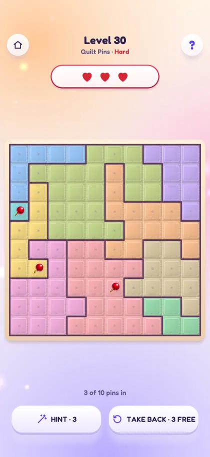

Quilt Pins: the patchwork logic puzzle
By the Sultan of Niyyat team, who make Puzzle Jar. Last updated .
Quilt Pins is the logic grid in Puzzle Jar. A square quilt is sewn from colored patches: put exactly one pin in every patch, one in every row and one in every column, and no two pins may touch, not even corner to corner. Every quilt has exactly one answer and can be solved by thinking alone, without guessing. A pin on a wrong square costs one of your 3 hearts.

On this page: 12 questions
- How do you play Quilt Pins?
- Is Quilt Pins the same as the Queens puzzle?
- What happens if I put a pin in the wrong square?
- Where should I start on a new quilt?
- What solving tricks does Quilt Pins use?
- Do I ever have to guess in Quilt Pins?
- How do the hearts work in Quilt Pins?
- What does a hint do in Quilt Pins?
- Is there a timer in Quilt Pins?
- How do Quilt Pins levels get harder?
- How many Quilt Pins puzzles are there?
- Will I like Quilt Pins if I enjoy sudoku?
How do you play Quilt Pins?#
Tap a square once to put a cross on it, your own note that no pin goes there. Tap it again to place a pin. Drag across several squares to cross them all at once. Squares that a placed pin already rules out show a faint dot, so you don't have to cross them by hand. When every patch, row and column has its pin, the quilt is finished.
Is Quilt Pins the same as the Queens puzzle?#
The rules are the same kind. Queens, the daily puzzle many people know from LinkedIn, and the older Star Battle puzzles all ask for one mark in every row, column and colored region, with no two touching. Quilt Pins is our own take: pins on a patchwork quilt instead of crowns, hearts for mistakes, and every quilt made by our own level maker. It has no connection to LinkedIn.
What happens if I put a pin in the wrong square?#
If the answer has no pin there, it counts as a mistake: the pin bounces off, the square is crossed out in red, and you lose a heart. A pin that would plainly break a rule, such as one in a row that already has a pin, simply won't go in and costs nothing. Lose all 3 hearts and you are stuck.
Where should I start on a new quilt?#
At the smallest patch, or at any patch that lies entirely inside one row or one column. A patch of a single square is a pin straight away. A patch that sits inside one row must take that row's pin, so you can cross out every other square of that row. Each pin you place then rules out its row, its column and the eight squares around it.
What solving tricks does Quilt Pins use?#
Five kinds of thinking, from plainest to hardest:
- A patch, row or column with only one square left must take its pin there.
- A patch whose free squares all lie in one row or column claims that line from every other patch.
- A square whose pin would leave some row, column or patch with no room at all can be crossed out.
- Groups: when two patches fit only in the same two rows, no other patch can use those rows (the same works with three).
- On the hardest quilts, a "what if" chain: imagine a pin, follow what it forces, and cross it out when it leads to a dead end.
Do I ever have to guess in Quilt Pins?#
No. Our solver checks every quilt before it goes in the game: each has exactly one answer, and that answer can be reached step by step with the kinds of thinking above. Even the "what if" chains on the hardest quilts are reasoning you can do in your head or with crosses. If you feel you must guess, there is a step you haven't spotted yet, and a hint will show it.
How do the hearts work in Quilt Pins?#
You start every level with 3 hearts, and each wrong pin costs one. Take back removes your last mistake and gives its heart back, though the square stays crossed out because you now know it is wrong. The first three take backs on a level are free. If all hearts are gone, a rescue gives you 3 more, up to twice on a level. There is no setting to switch hearts off.
What does a hint do in Quilt Pins?#
It places the next pin that can be worked out from the pins already on the quilt, and tells you why in plain words, such as which patch or row forced it. We did this because a hint that only shows the answer teaches nothing. Using hints well is a good way to learn the harder tricks.
Is there a timer in Quilt Pins?#
No clock is shown, and you can take as long as you like. The game does quietly note how long each quilt takes you: if you are slower than usual on 6 of your last 10 levels, the next quilts get a little smaller and easier. Two wins in a row without help nudge it the other way.
How do Quilt Pins levels get harder?#
They follow a fixed ladder. Levels 1 to 10 use small quilts from 4 by 4 up to 9 by 9; after that, quilts are 8 by 8 to 10 by 10. Levels 1 to 5 need only the plainest kind of thinking, and harder kinds arrive at levels 6, 21 and 51. From level 30, every tenth level is a "Hard" quilt, and levels 35, 45, 55 and so on bring an extra-big 11 by 11 "Boss".
How many Quilt Pins puzzles are there?#
Our bank holds 2,000 quilts, from 4 by 4 to 11 by 11, and each can be turned and mirrored 8 ways, so they play as 16,000 levels. You won't get the same quilt twice until a whole group of them has been used. On top of that there is a daily quilt in "Today's puzzles", drawn from a set of 60.
Will I like Quilt Pins if I enjoy sudoku?#
Very likely. It is the same pure deduction, one placement forcing the next, but with colored patches instead of numbers, so there is no arithmetic. Dark seams mark every patch border, so you can read the shapes even if you find some pastel colors hard to tell apart. It is the slowest, most thoughtful game in the jar, and it sits near the end of each lap of the level road for that reason.